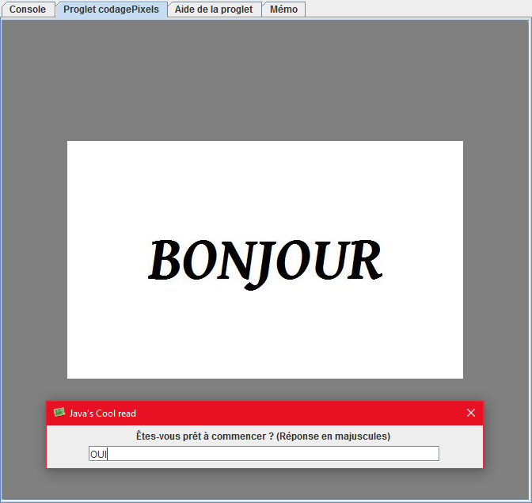
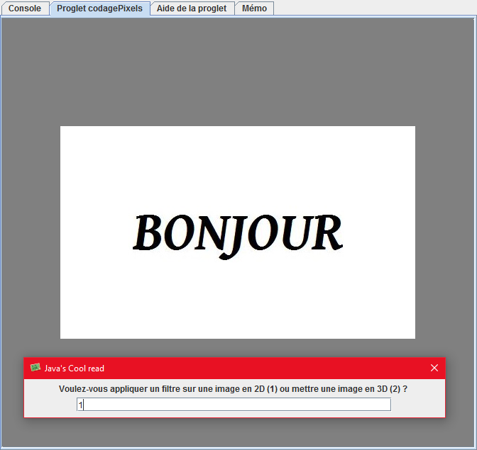
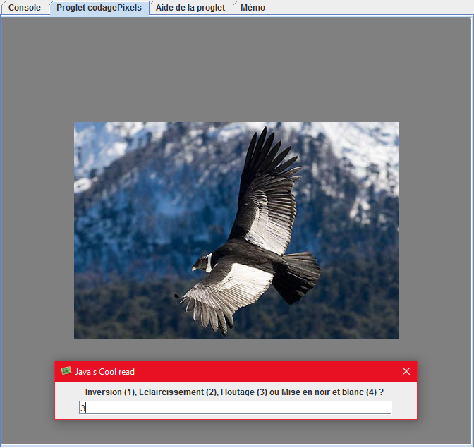
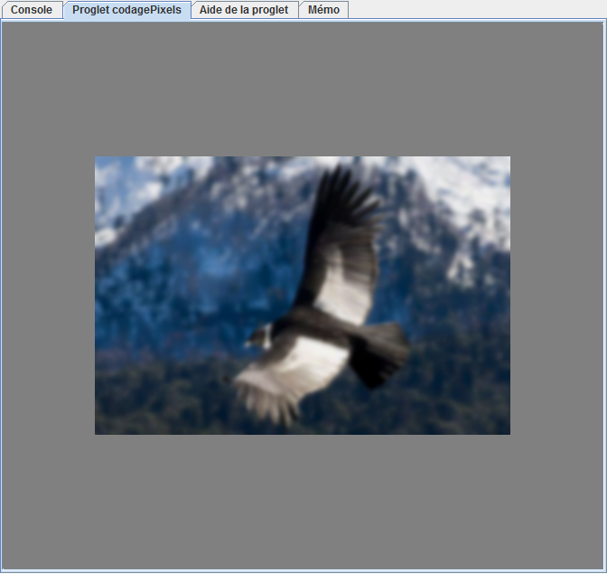
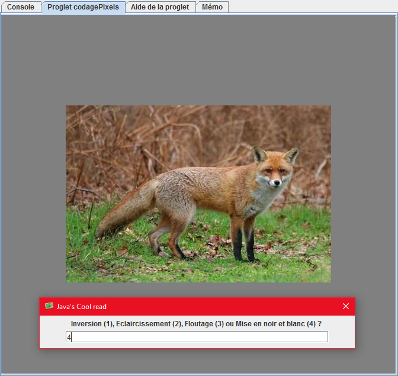
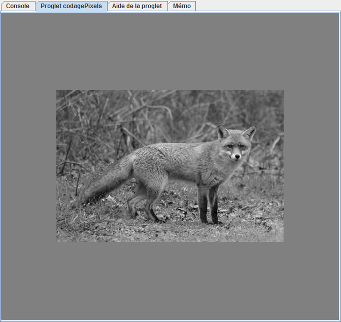
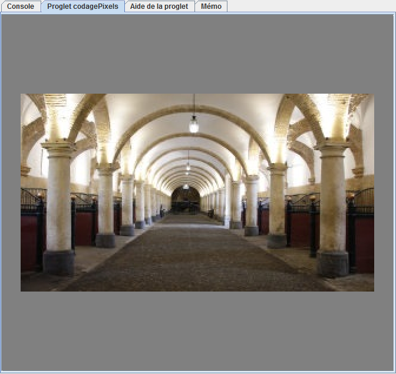
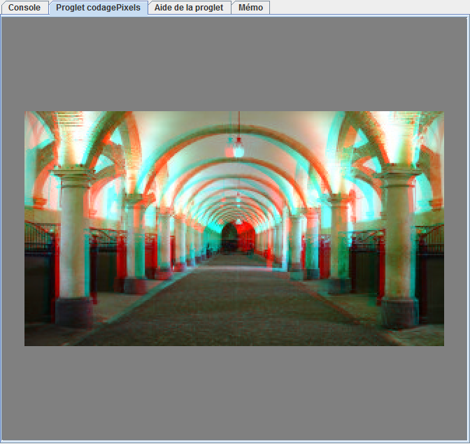

Illustrations :

Capture 1 :
Démarrage du logiciel

Capture 2 :
Choix du mode 2D ou 3D

Capture 3 :
Image d'origine pour le floutage

Capture 4 :
Image après floutage

Capture 5 :
Image d'origine pour la mise en noir et blanc

Capture 6 :
Image après mise en noir et blanc

Capture 7 :
Image d'origine pour la mise en 3D

Capture 8 :
Image après mise en 3D

Capture 9 :
Lunettes à anaglyphes